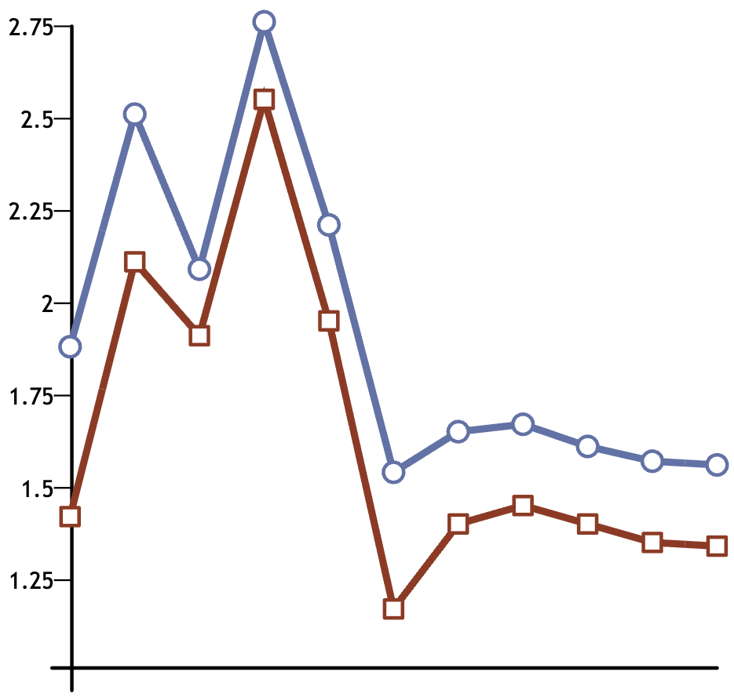
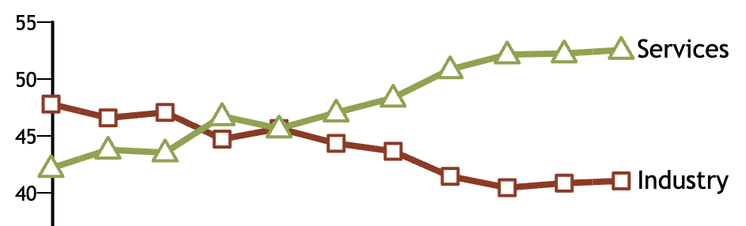
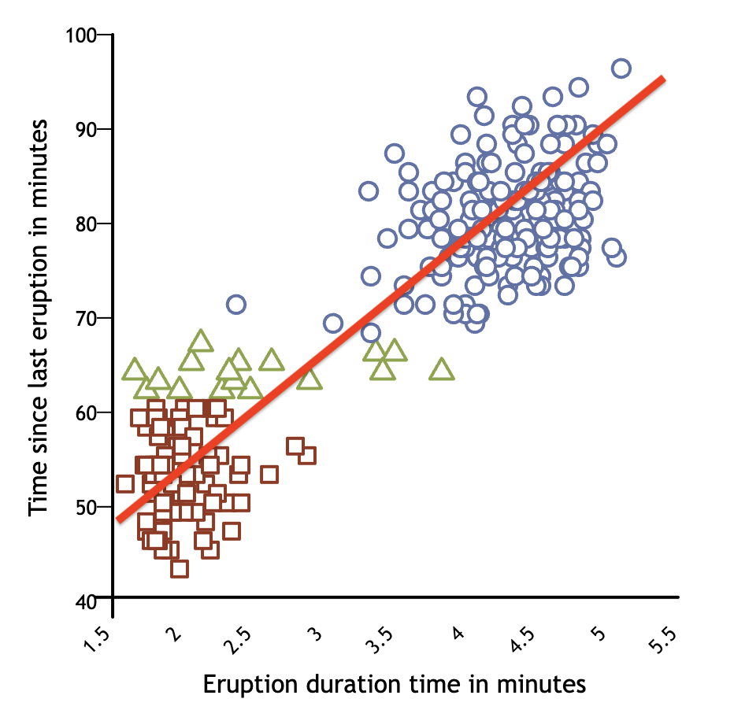
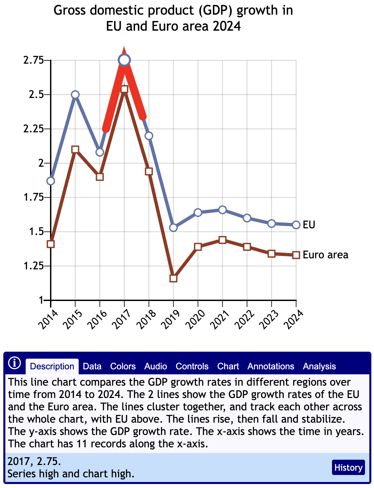
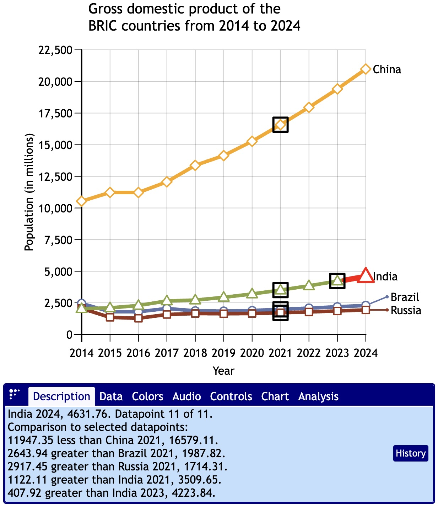
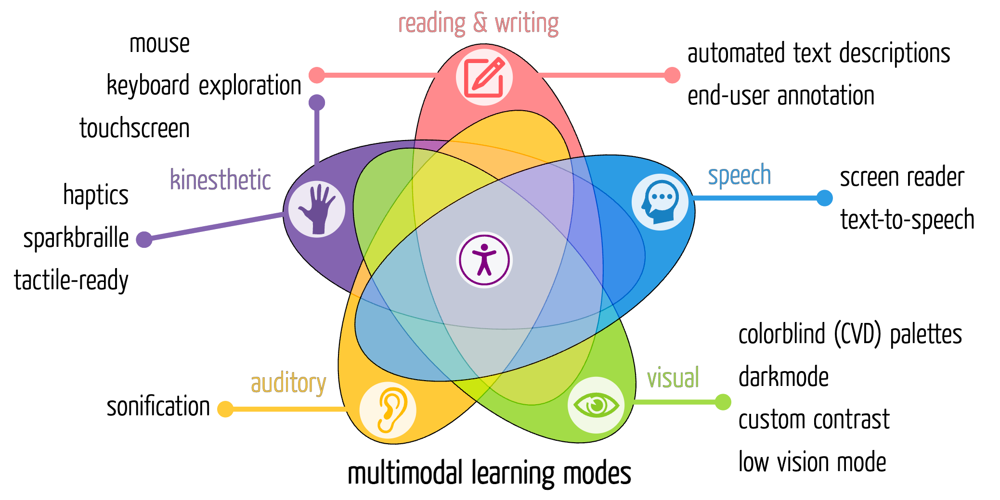

Access to information should be universal… but it's not!
Charts, graphs, and maps reveal deeper insights into data than mere numbers. But too often, chart software does not provide equivalent affordances for people with disabilities.
Over 70 million Americans identify as having a disability… 28.7% of adults in the United States.
1.1Mpeople withblindness
6Mpeople withlow vision
6Mpeople withcognitiveimpairments
12Mpeople withcolorblindness
The core insights of charts, such as trends, patterns, outliers, intersections, tracking, and more are immediately obvious to sighted users with normal cognitive abilities, but difficult and time-consuming for blind users to discover or for people with some cognitive impairments to interpret.



Challenges for different disabilities
Blindness
Best case: serial access only. Worst case: no access at all.
People with blindness commonly use a screen reader to listen to and explore the contents of a web page, including alt text for images.
At worst, and all too common, charts have no accessible equivalent… no data table, no alt text.
At best, commercial chart software offers serial access… a disjointed sequence of numbers. For trends, the most accessible software offers sonification, such as music notes of higher or lower pitch based on the value of the data point.
Low Vision
Charts are easier to see than tables, but poor design can make them hard to read.
People with low vision often use magnifier software, zooming out for the big picture and zooming in and panning around for the details. They often also prefer dark mode, to increase color contrast.
Charts, with strong colored blocks or lines are often easier than a table of fine text for people with low vision. But they can still struggle with some aspects or oversights.
Charts with legends rather than direct labels force them to zoom and pan much more, taxing their memory.
And many chart software packages don't respect dark mode, making black text impossible to read and hiding axis lines or even data points.
Cognitive impairments
People with memory issues, dyslexia, or dyscalculia may have difficulty reading or interpreting charts.
Cognitive disabilities are widely varied and often difficult to quantify or address. Charts may offer solutions or challenges.
Memory tasks, such as recalling the meaning of a symbol or color, can be tricky.
Rotated, crowded, or small text can exacerbate dyslexia.
Understanding the relationship of numerical values can hinder a person with dyscalculia from grasping the gist of a chart.
Color vision deficiency
Charts use multiple colors for meaning, which may be lost on those with color blindness.
People with CVD (color blindness) may not be able to distinguish colors by name, or even see a distinction between multiple colors.
Unfortunately, shifting to a palette of colors that works well for one type of color blindness (e.g., green-red) may actually be worse for another type of color blindness (e.g. blue-yellow).
Challenges for creators of charts
The challenges for people with disabilities is matched by the challenges for those who create, publish, or teach with charts. How do you make a chart that's accessible for everyone?
Data visualization accessibility is uncharted territory. Web accessibility standards such as WCAG say little about it. There is some informal guidance, but it's often technical and difficult to execute with the charting software at hand.
Curriculum workflows are complex. Curriculum designers have to navigate complicated workflows to ensure that graphics are accessible; often the people making the graphics aren't the authors of the content, and the disconnect shows.
LMSes are on the hook, but not equipped to solve local issues. Learning management systems struggle with providing a user interface that aid or enforce teachers in making accessible charts.
Alt text is hard. It's technically easy to provide alt text for a static chart, but most people don't know how to write good alt text for charts. And it's impossible to do for dynamic charts from live data. Generative AI text from LLMs isn't consistent or private enough to use in Business.
Chart software is the problem. Most chart software is not accessible, does not make accessible charts, and isn't flexible enough to allow authors to provide their own accommodations.
The unfortunate reality is that data visualization accessibility is an intricate, niche skill, demanding expertise in data visualizations, user interface design, cognitive load theory, and specialized accessibility best practices, and it needs a custom solution for each different chart type and for each type of disability.
Legal obligations
Despite the challenges, the need for equal access to data and information is laid out in the Effective Communication provision of Title III of the ADA. Charts are not exempt from this; in the past, technological limitations in charts may have sufficed as an undue burden claim, but this is shifting as new technologies become available.
Lack of graphicacy
Compounding all these difficulties in reading and making charts is that it is a self-perpetuating downward spiral. Because many students with disabilities don't have access to appropriate accessible graphics, they don't get the value, and never learn to use graphics. This in turn decreases the demand for accessible graphics.
Graphicacy, or the ability to understand and present information in a non-textual way, is an increasingly important skill in our society. The lack of graphicacy in the blind community is well-documented.
Breaking the poor graphicacy cycle is critical.
Our solution: ParaCharts!
ParaCharts is a new open-core software package designed with accessibility and usability from the ground up. Combining best-of-class accessibility with automated descriptions, ParaCharts redefines what a chart can be.
Born accessible
ParaCharts meets WCAG AAA, the highest level of guidance, and goes well beyond the standards.
We have all of the conventional accessibility chart features, such as intuitive keyboard support, in-depth serial data exploration, and sonification. We also offer many innovative new features not found elsewhere, like user-centered color control, braille chart display, low vision mode, and more.
Particular care has been taken to apply the principles of Cognitive Load Theory to reduce barriers for understanding the visual meaning of the charts, and to keep the automatic descriptions succinct and accurate.
Automated descriptions

ParaCharts automatically describes the chart, its trends, and important details for each data point.
For dynamic charts or live data, we produce high-quality automated descriptions with our custom AI. These are not just captions… we automatically annotate the chart at every level, from the whole chart, to each series, to each data point.
Consistent and concise
Our custom machine learning (ML) system works inside the browser to detect patterns and trends in the data. Our Salience Engine determines which of those facts are the most important.
Because we use traditional ML, not Large Language Models (LLMs), our descriptions for any chart are consistent from session to session, and person to person. This is critical in an Businessal context.
Always accessible
Some other charting software has good accessibility, but it's not on by default, and the publisher has to turn it on, not the end-user. With ParaCharts, accessibility is always on… you can't turn accessibility off.
So authors and end users can be confident that if they encounter a ParaChart, it's accessible.
Easy to use
A novice user with only basic HTML knowledge can simply wrap a data table in a ParaCharts element, specify what chart type they want, and the table is instantly transformed into an accessible chart.
It's equally easy for technology professionals to use, with JSON manifest files, a flexible API, and expansive customization.
Our upcoming authoring tool and WordPress plugin makes building and designing charts a breeze, with no coding required.

Query mode lets you drill down into more detailed contextual information about data points and their relationships
Annotation and analysis tools
Authors can add custom annotations to the charts at any level, enhancing or overriding the automated descriptions to tell their story about the data their own way.
And so can users! ParaCharts lets end users add notes to data points or series, draw and label analyses on the charts, and share their annotations with others through a rich link (no centralized service required).
Users can also use data point selection and query mode at the touch of a key to get detailed contextual information about the current selected data points.
Customization and personalization

Many people with disabilities have more than one disability. Personalization enables the user to close the gaps for their own needs. We provide sensible defaults to make our charts as accessible as possible to the widest set of people, and we go further by offering extensive customization options for end-users.
These customization options include:
Custom color palettes for each type of color vision deficiency (color blindness)
Darkmode and custom contrast levels
A hotkey-triggered low-vision mode
Graphical braille output
Optional self-voicing
… and much more
Privacy-centric, ethically developed
All of our AI pattern analysis is done directly in the browser, with no need for any external service… which also means, no cloud subscriptions or hidden costs.
The AI was all custom developed by the the Fizz Studio team. All of the training data was commissioned specifically for this project, and the trainers were paid above the average rate. There is no IP infringement, and no risk of unforeseen downstream legal impacts on our customers or users.
No data ever leaves the chart… not the publisher's data, and not the user's data, without the user taking steps to send or save it. Our software doesn't use cookies or store any personally identifiable information (PII); it does store user preferences locally in the browser, but that information is not collected, and can be changed or cleared by the user.
Tailored for teaching and learning
ParaCharts gives students to fully explore a chart, and find hidden insights. Sometimes, too many insights! Instructors may wish the descriptions and queries to withhold certain key details that are part of an assessment, forcing the students to figure it out from basic information. No problem! ParaCharts has an optional module that lets instructors indicate which details or calculations are not to be revealed, and ParaCharts will omit those from the descriptions and queries, substituting in “a hidden value”, “a hidden trend”, and so on.
Suitable for pedagogy or for assessment, ParaCharts can be used in both teaching and test-taking environments, providing a single consistent interface for students to ensure fairness and equivalence.
ParaCharts raises the bar
ParaCharts will be the new standard in chart accessibility by which all other chart software will be judged. Future-proof your Businessal environment now, or catch up as your competitors pass you by.